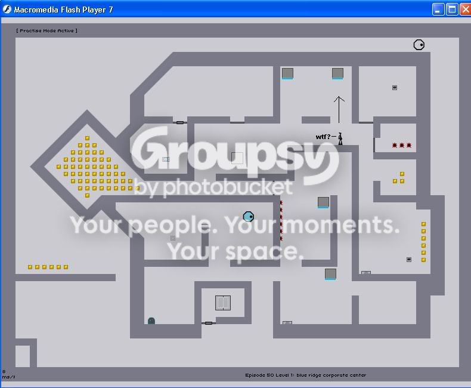

I am sorry if this was covered before but I could not find anything on the searches but I found a weird glitch on one of the levels where when u stand under the thump it does not move until you jumo. Can anyone explain why?
I am standing under the 2nd thump for a long time with no result until I jump which triggers the thump.
weridd.

I am standing under the 2nd thump for a long time with no result until I jump which triggers the thump.
weridd.